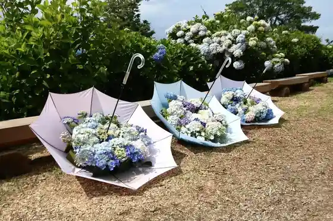
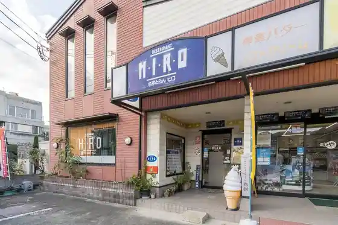
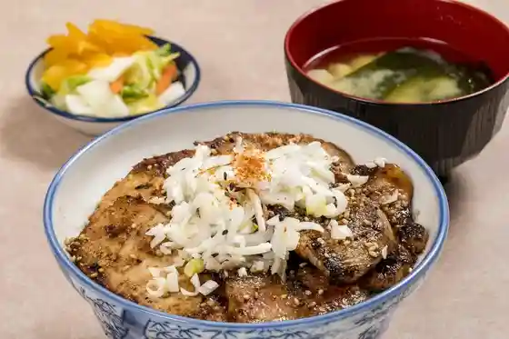

Shimonita Ajisai Sono
Shimonita, Gunma · 0274-67-7500 · Official / source link

Naka Yuki Gaku Shrine
Shimonita, Gunma · 0274-67-7500 · Official / source link
Resutoran Hiro
Shimonita, Gunma · 0274-82-3325 · Official / source link

Seiyo Ryori Nissho Ken
Shimonita, Gunma · 0274-82-2285 · Official / source link
Shoku Tei Eito
Shimonita, Gunma · 0274-82-2371 · Official / source link

Yasube
Shimonita, Gunma · 0274-82-2516 · Official / source link
Tokiwa Kan
Shimonita, Gunma · 0274-82-2216 · Official / source link
Prefectural Forest Park Sakura Village
Shimonita, Gunma · Official / source link
Abuda Fukuju Kusa Village
Shimonita, Gunma · 0274-67-7500 · Official / source link
Roadside Station
Shimonita, Gunma · 0274-82-5858 · Official / source link
Arafune Yama
Shimonita, Gunma · 0274-82-2111 · Official / source link
Shimonita Onsen Seiryu So
Shimonita, Gunma · 0274-82-3077 · Official / source link
Kiyoshiya Shokudo
Shimonita, Gunma · 0274-82-3176 · Official / source link
Nabeya
Shimonita, Gunma · 0274-82-2028 · Official / source link
Burassurii Chacha
Shimonita, Gunma · 0274-82-2030 · Official / source link
Toyo Ken
Shimonita, Gunma · 0274-82-3177 · Official / source link
Ichiban
Shimonita, Gunma · 0274-82-2594 · Official / source link
Myogi Yamaishi Mon Meguri
Shimonita, Gunma · 0274-67-7500 · Official / source link
Yachiyo Onsen Seri Baths
Shimonita, Gunma · 0274-84-3812 · Official / source link
Kare to Kohii Shimonfuddo
Shimonita, Gunma · 0274-67-5651 · Official / source link
Sukiyaki Koromubia
Shimonita, Gunma · 0274-82-3128 · Official / source link